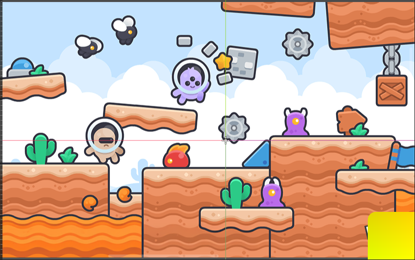
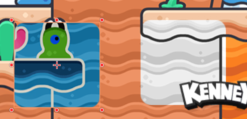

01UV坐标操控
10-Canvas着色器
对比前面内容，这里主要是关于屏幕空间中效果的实现。介绍如何直接从屏幕渲染获取信息，这个流程有点类似于后处理的方式。其运行时，会获取在该pass之前屏幕已经渲染好的内容，然后再进行加工处理。
屏幕坐标
在顶点着色器中一般通过VERTEX字段来获取顶点坐标，而片段着色其中也有一个内置变量的VERTEX。这个语义则跟顶点着色器中的不一样，其获取的是当前片元在屏幕空间中的坐标。
void vertex() {
VERTEX // 面片顶点在局部空间中的坐标
}
void fragment() {
VERTEX // 当前片元在屏幕空间中的坐标
}例如如下shader可以让当前Sprite2D根据所在屏幕位置显示对应的颜色
void fragment() {
COLOR.rgb = vec3(VERTEX*SCREEN_PIXEL_SIZE,0);
}
当在最右下角的时候，会显示为黄色。
代码中VERTEX给出屏幕空间坐标，例如分辨率为$1920\times 1080$则最右下角坐标给出$(1920,1080)$。SCREEN_PIXEL_SIZE给出每个像素的大小，其相当于$(1/1920,1/1080)$。
可以通过如下方式获取相同的屏幕坐标
varying vec2 screen_pos;
void fragment() {
screen_pos = (CANVAS_MATRIX * MODEL_MATRIX * vec4(VERTEX,0,0)).xy;
}这就是通过顶点局部坐标换算世界坐标，然后转到屏幕坐标的方式。
在片段着色其中，以下获取屏幕归一化坐标的方式是等价的
void fragment() {
// 矩阵算出的坐标来
COLOR.rgb = vec3(screen_pos*SCREEN_PIXEL_SIZE,0);
// 屏幕坐标
COLOR.rgb = vec3(VERTEX*SCREEN_PIXEL_SIZE,0);
// 屏幕空间坐标归约到 0-1范围
COLOR.rgb = vec3(SCREEN_UV,0);
// frag coordinate xy为屏幕坐标 z则制定了片段深度
COLOR.rgb = vec3(FRAGCOORD.xy*SCREEN_PIXEL_SIZE,0);
}屏幕Texture
为了实现屏幕处理效果，很多时候还要获取当前Texture后方的画面。要实现这个效果，需要声明一个sampler2D并标记hint_screen_texture，该sampler2D会被godot自动填充当前屏幕渲染内容，其格式如下：
uniform sampler2D screen_texture : hint_screen_texture;该Texture会自动填充屏幕渲染内容，其大小相当于整个屏幕空间。所以可以通过如下方式让当前Sprite2D完全显示其背后的内容，其看起来就跟完全消失一样。
void fragment() {
COLOR.rgb = texture(screen_texture, SCREEN_UV).rgb;
}基于这样一个流程可以做很多有意思的屏幕后处理效果。例如反色处理，灰度处理等等：
void fragment() {
// Sprite2D区域会显示后方区域的反色版本
COLOR.rgb = 1.0-texture(screen_texture, SCREEN_UV).rgb;
// Sprite2D区域会显示后方区域的灰度版本
COLOR.rgb = vec3(texture(screen_texture, SCREEN_UV).r);
}其对应效果如下：

屏幕着色器可以参看官方文档
https://docs.godotengine.org/zh-cn/4.x/tutorials/shaders/screen-reading_shaders.html